The Geographical and Historical Context
Activities
Activity 1 — Timeline
Construct a timeline of the major periods of Greek History spanning from ancient Egypt and Mesopotamia through the 5th century BC, noting that “The Persian Empire was the first truly gigantic empire.” YouTube clips are recommended for contextual understanding.
The Greeks — Introduction (PBS series) — ulver22
Video summary
An introduction to ancient Greek civilisation, covering geography, culture, and the development of city-states.
Greeks Romans Vikings: The Founders of Europe — Episode 1: The Greeks — Macedonian Always Greek
Video summary
Episode exploring the foundations of European civilisation through ancient Greek society, politics, and warfare.
Introduction to Hellas — Ancient Greek Society — 01 — Digital Diogenes
Video summary
Overview of Hellenic society including social structure, religion, and daily life in ancient Greece.
Activity 2 — Slides Review
Review the slides presentation titled “Ancient Greece — Historical and Geographical Context” and take notes on Greek geographical features and regional developments.
Historical and Geographical Context — Presentation Notes
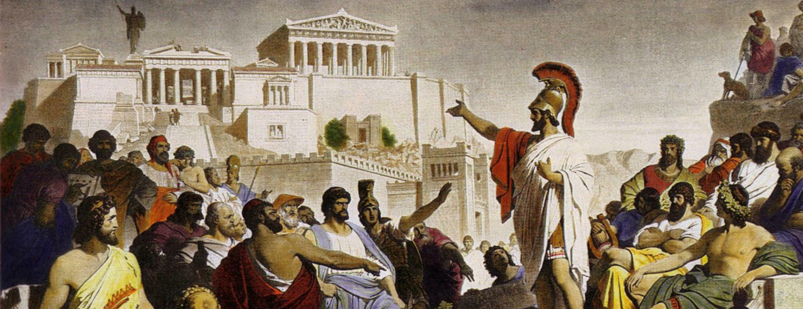
Painting the Picture
The major themes of the period between 500 and 440 BC are threefold:
- The Persian Wars
- The development of Athens and its empire
- The changing relations between Athens and Sparta.
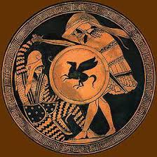
Historical Context — 500 BC
At the beginning of the 5th century BC, the major power in the Mediterranean region was Persia.
During the 6th century BC Persia embarked on a series of military conquests absorbing nearby states and kingdoms into its empire.
By 500 BC its power reached to the Aegean Sea.
The next step in its Imperial expansion was the addition of Greece.
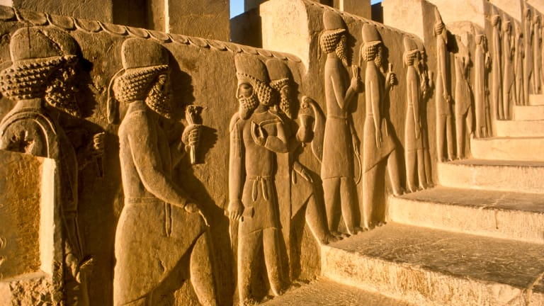
Persian Empire — 500 BC
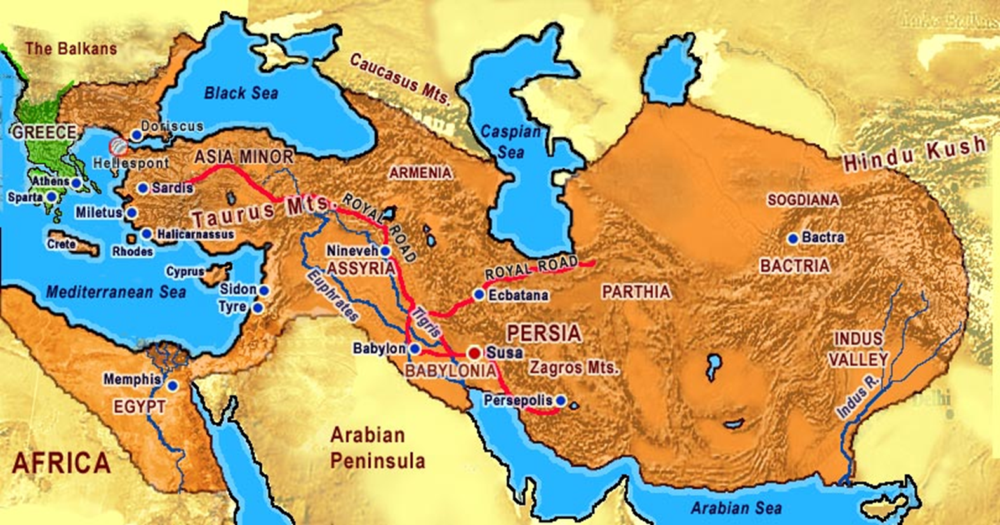
Greek Context — 500 BC
In 500 BC the concept of a Greek national identity did not yet exist. In fact Greece did not exist as a country in the modern sense.
Greece’s mountainous terrain separated the ancient Greek cities. As such, the ancient Greeks never developed a unified system of government.
The ancient Greeks developed the polis comprising a number of independent city-states.
While they shared a common language and religion, people at this time considered themselves Spartans, Athenians, Thebans, Corinthians and so on.
Rarely did they unite to fight a common enemy; they were too busy fighting each other.
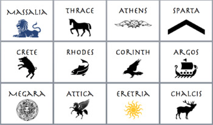
Athens and Sparta
Athens and Sparta were the leading city-states.
The Spartans were generally regarded as the superior military force, having developed to a high degree the art of hoplite warfare.
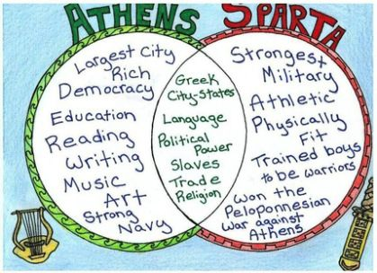
The Persian Wars
In the years between 490 BC and 479 BC, Persia and Greece fought in a series of battles known as the Persian Wars.
The Persian wars were marked by a series of attempts, between 490 and 479 BC, to invade and conquer the Greek mainland.
Miraculously, the Greek states managed to stave off the Persian kings, first Darius and then Xerxes, and their troops.
Memory of the wars suffused the Greek imagination for the remainder of antiquity, and it continues to do so down to the present day.
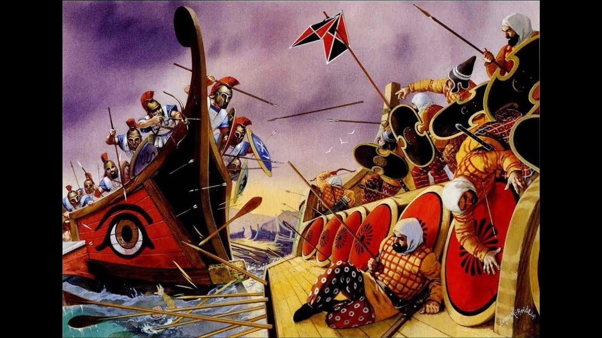
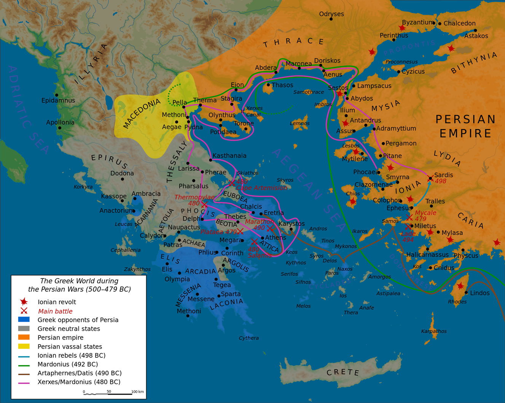
Geographical Context — The Landform of Greece
The landform of Greece:
The presence of many small city-states was the result of Greece’s particular landform:
- Rugged limestone mountains ran north to south dividing central Greece.
- There were few large plains, but many small fertile ones.
- The mountain barriers and high infrequent passes made communications and transportation difficult so movement of people and goods was usually by sea.
- Rugged mountain barriers provide some defence for the city-states, e.g. Sparta; larger armies could be contained by smaller forces.
The Topography of Greece
The map shows the mountain ranges of Greece. Only the areas in green are fertile enough to support city-states.
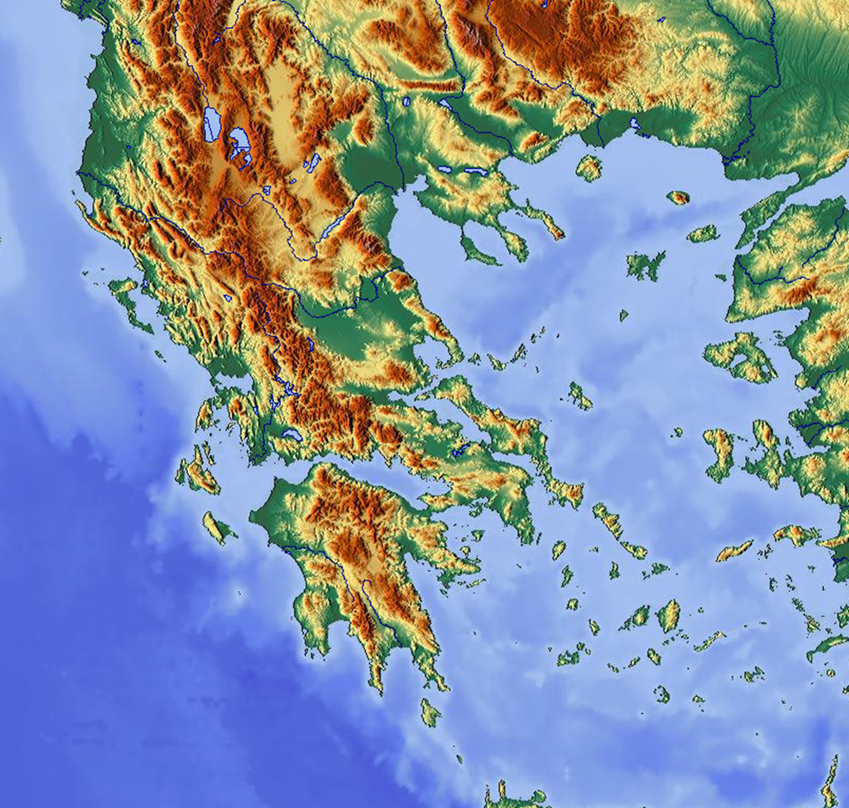
City-States
This map shows the location of the ancient Greek city-states. As can be seen, they are mostly in the low-lying regions.
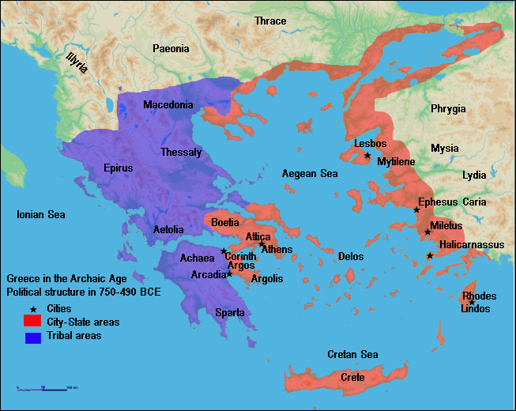
Greece — 500 BC
The major city-states of the Greek mainland were Sparta and Athens.
Greeks (Ionians, Aeolians and others) from mainland Greece had migrated across the Aegean sea and settled in isolated valleys and on the offshore islands off the coast of Asia Minor (modern Turkey). This area was known as Ionia. Like the mainland Greeks they lacked unity.
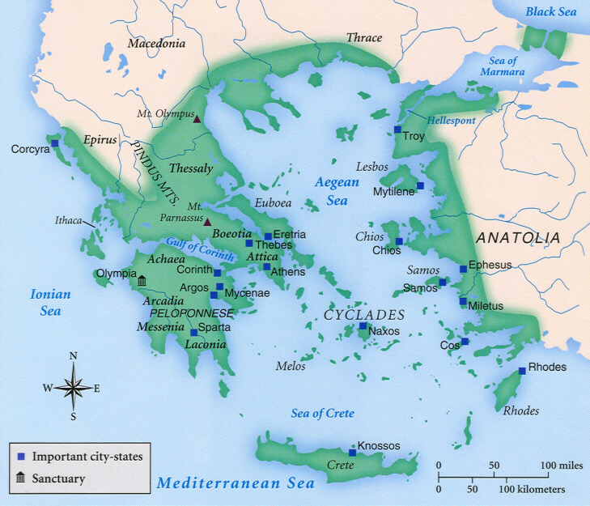
Athens in the 5th Century — Artists’ Reconstructions
Note everything you see in these images.
What do they reveal about Athens in the 5th century BC?
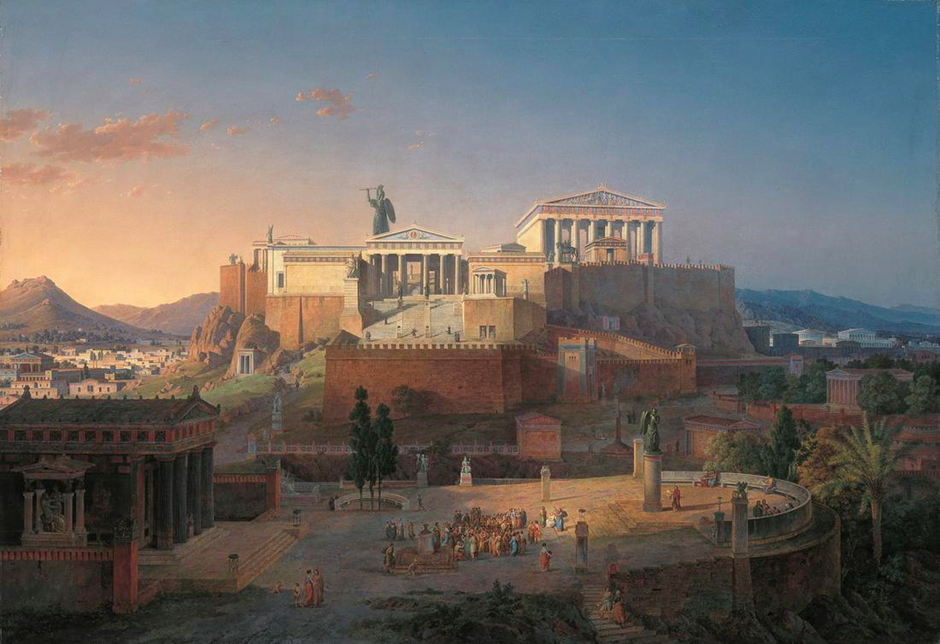
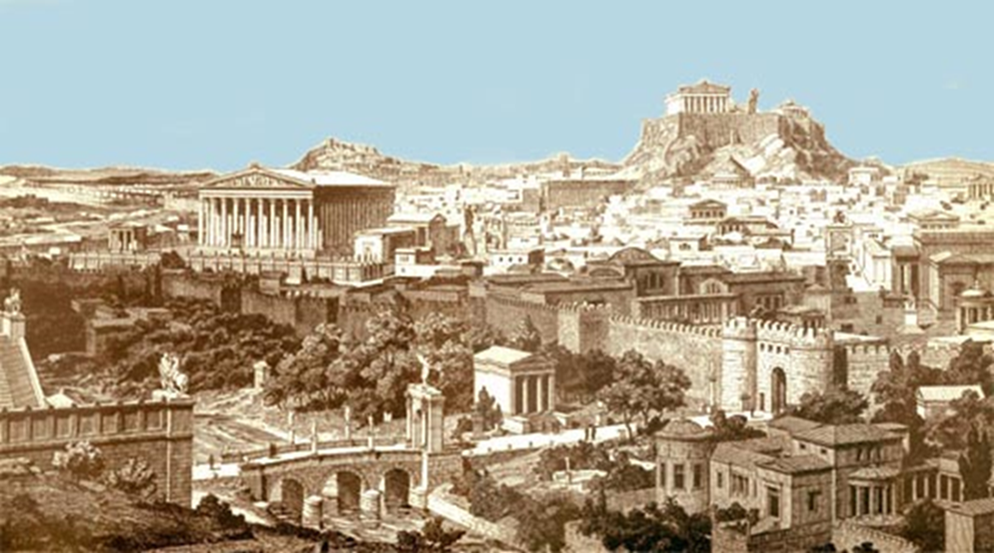
The Near East
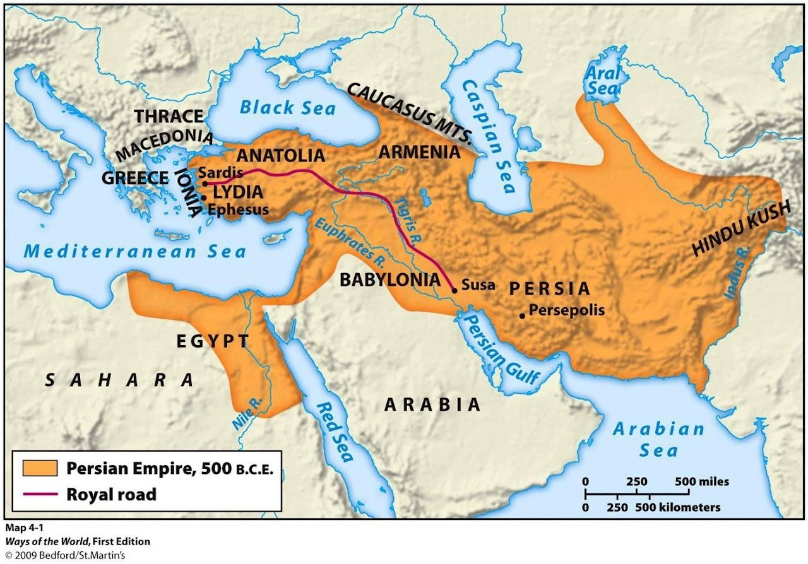
Key Geographic Facts
- By 500 BC, the Persian Empire “covered a large part of the continent of Asia and included areas in North Africa (Egypt and Libya) and Europe (Thrace and Macedonia)”
- Total area: approximately 5.5 million square kilometres
- The empire contained “approximately fifty million people of different nationalities… Only about half a million were genuine Persians”
Administrative and Infrastructure Details
- The empire was divided into satrapies (provinces), with “20 different satrapies” identified by Herodotus, though “probably closer to 30”
- “A system of roads made travel and communication relatively easy when compared to Greece”
- The Royal Road connected Susa (Persian capital) to Sardis in Lydia
Cultural Elements
Language
Because of their bond of language, the Greeks referred to those whose native language was not Greek as barbarian. Their speech sounded to the Greek like bar-bar-bar.
Poetry
Poets wandered from polis to polis in search of patrons. Poets from the Aegean and Asia Minor lived and worked in mainland city-states.
Visual Arts
Sculptors and architects travelled easily from city to city. Their ideas were accepted and they had an impact all over Greece.
Myths
The Greeks shared a stock of mythical tales. There was a myth behind every rite and cult centre.
Customs
Nomina or customs included much that could be classified as religious practices.
Religion
The Olympic Games in honour of Zeus attracted Greeks from all over Hellas. The Oracle at Delphi was consulted by all Greeks.
Resources
The empire possessed “vast resources” including minerals, timber, skilled workers, and military manpower, with wealth flowing to courts at Susa and Persepolis through tribute systems.